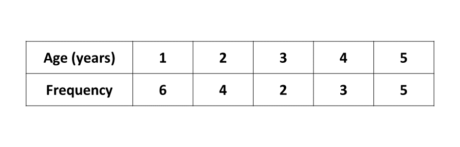

BECE
Year to Practice:
1990
1991
1992
1993
1994
1995
1996
1997
1998
1999
2000
2001
2002A
2002B
2003
2004
2005
2006
2007
2008
2009
2010
2011
2012
2013
2014
2015
2016
2017
2018
2019
2020
2021
2022
2023
2024
PAST QUESTIONS 1997
Time yourself to improve on your speed. You are to use not more than 60 minutes for this section.
Click on the link below when you are ready.
Kindly contact the administrator on WhatsApp or Phone (0208711375) for the link to the test.
Try the questions first, using not more than 15 minutes for each question, and watch the accompanying videos to see how the questions are solved.
Question 1
-
If \(p = 7, a = 16, b = -5\) and \(c = 3\),
evaluate \(p^2 - \frac{(a - b)}{c}\) -
Solve the inequality \(5x - 3(x - 1) \geq 39\).
Illustrate your answer on the number line. -
If \(\mathbf{x} = \begin{pmatrix}-3 \\ 2 \end{pmatrix}\) and \(\mathbf{y} = \begin{pmatrix}4 \\ -1 \end{pmatrix}\), find
\((i)\) \(\mathbf{x} + 2\mathbf{y}\)
\((ii)\) \(3\mathbf{x} - \mathbf{y}\)
Solution
Solution
Solution
Question 2
-
Using a ruler and pair of compasses only:
\((i)\) Construct triangle \(ABC\) such that \(|AB| = 8\) cm, \(|BC| = 8\) cm and \(\angle BAC = 60^\circ\).
\((ii)\) What type of triangle is triangle \(ABC\)?
-
Contruct the bisector of \(\angle BAC\) to meet \(BC\) at \(D\). Measure \(AD\).
-
Construct the perperdicular bisector of \(AB\) to meet \(AD\) at \(O\).
-
Using \(O\) as centre and radius \(OD\), draw a circle to touch the three sides of the triangle.
Solution
Question 3
-
\(2y - 5x + 10 = 0, \) find
\((i)\) \(y\), when \(x = 2\)
\((ii)\) \(x\), when \(y = 5\)
-
Using a scale of 2 cm to 1 unit on both axes, draw two perpendicular lines \(Ox\) and \(Oy\) on a graph sheet.
\((i)\) On the same graph sheet mark the \(x-\)axis from \(-5\) to \(5\) and the \(y-\)axis from \(-6\) to \(6\).
\((ii)\) Plot on the same graph sheet the points \(A(0, -5)\) and \(B(4, 5)\). Join \(AB\) using a ruler.
\((iii)\) Find the gradient of the line \(AB\).
\((iv)\) Measure the acute angle the line \(AB\) makes with the \(x-\)axis, using a protractor.
Solution
Solution
Question 4
-
The table below shows the distribution of the ages of children who were treated in a clinic in a day.
Find
\((i)\) the mean age,
\((ii)\) the modal age.
-
Draw a bar chart for the distribution.
Solution
Question 5
-
The volume of a cylinder is \(220\) cm\(^3\), the radius of the cross section is 2.5 cm. Find the height of the cylinder. [Take \(\pi = \frac{22}{7}\)]
-
Each of the interior angles of a regular polygon is \(140^\circ\). How many sides has it?
Solution
Solution
To advertise on our website kindly call on 0208711375 or 0249969740.